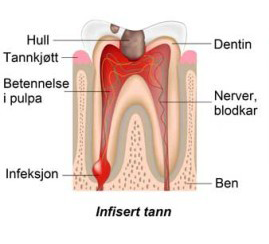
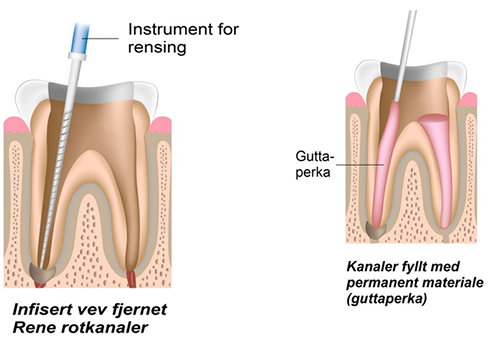
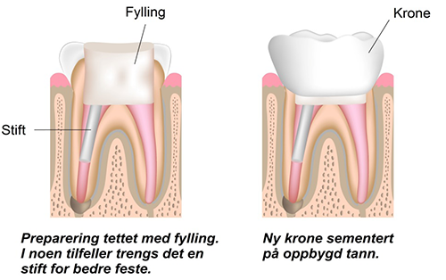

Rotfylling gjør vi når nerven inni en tann er blitt angrepet og syk av bakterier. Årsaken kan være et dypt hull, en sprekk i tannen, sykt tannkjøtt, eller tidligere skade.

Nerven må da renses ut av røttene og erstattes av rotfylling med et naturplastmateriale (guttaperka). Rotfylling er en behandling som kan kreve to eller flere besøk. Man vil vanligvis være godt bedøvd og smertefri under behandlingen. Målet er å hindre at bakterier sprer seg i kjeven og i kroppen. Ved hjelp av rotfylling kan man ofte beholde en tann som ellers måtte trekkes.

Når tannen er ferdig rotfylt og fri for infeksjon og smerter, må den bygges opp med fyllingsmateriale eller med en krone, som eventuelt må forankres med stift i rotkanalen.
